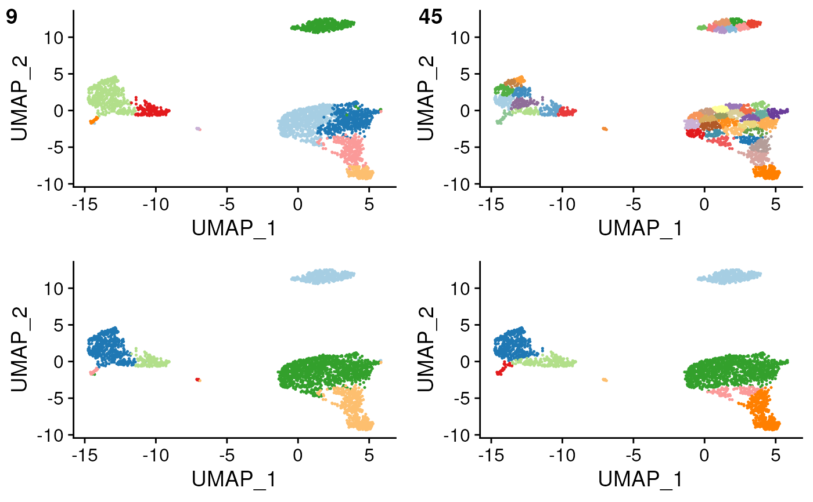

compare clustering parameters and classification outcomes
Usage
overcluster_test(
expr,
metadata,
ref_mat,
cluster_col,
x_col = "UMAP_1",
y_col = "UMAP_2",
n = 5,
ngenes = NULL,
query_genes = NULL,
threshold = 0,
do_label = TRUE,
do_legend = FALSE,
newclustering = NULL,
combine = TRUE
)Arguments
- expr
expression matrix
- metadata
metadata including cluster info and dimension reduction plotting
- ref_mat
reference matrix
- cluster_col
column of clustering from metadata
- x_col
column of metadata for x axis plotting
- y_col
column of metadata for y axis plotting
- n
expand n-fold for over/under clustering
- ngenes
number of genes to use for feature selection, use all genes if NULL
- query_genes
vector, otherwise genes with be recalculated
- threshold
type calling threshold
- do_label
whether to label each cluster at median center
- do_legend
whether to draw legend
- newclustering
use kmeans if NULL on dr or col name for second column of clustering
- combine
if TRUE return a single plot with combined panels, if FALSE return list of plots (default: TRUE)
Examples
set.seed(42)
overcluster_test(
expr = pbmc_matrix_small,
metadata = pbmc_meta,
ref_mat = cbmc_ref,
cluster_col = "classified",
x_col = "UMAP_1",
y_col = "UMAP_2"
)
#> using # of genes: 599
#> similarity computation completed, matrix of 9 x 13, preparing output
#> using # of genes: 599
#> similarity computation completed, matrix of 45 x 13, preparing output
#> Warning: ggrepel: 7 unlabeled data points (too many overlaps). Consider increasing max.overlaps
#> Warning: ggrepel: 8 unlabeled data points (too many overlaps). Consider increasing max.overlaps
